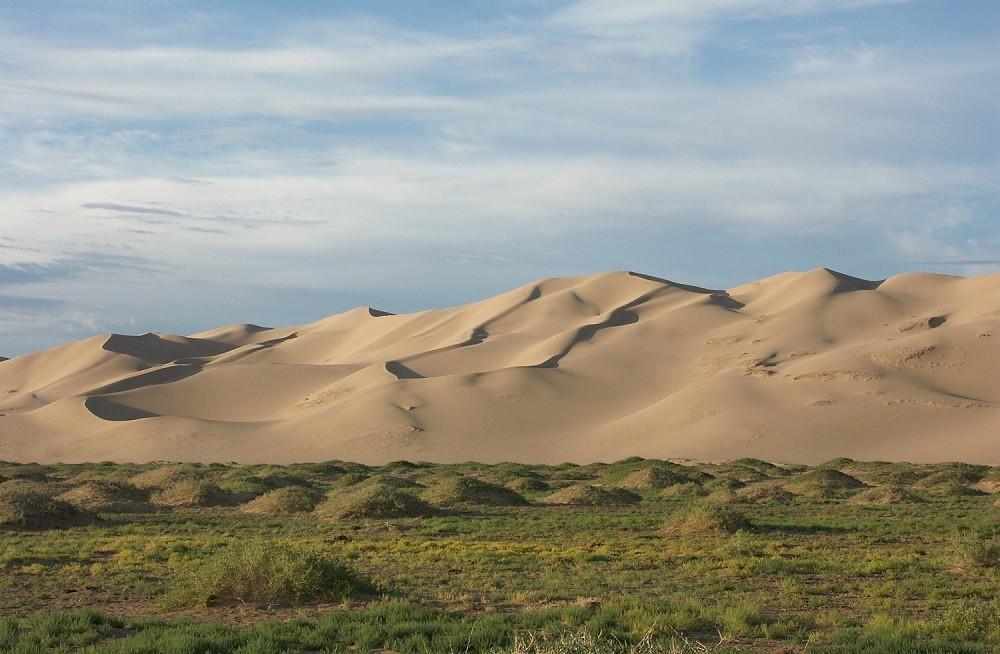
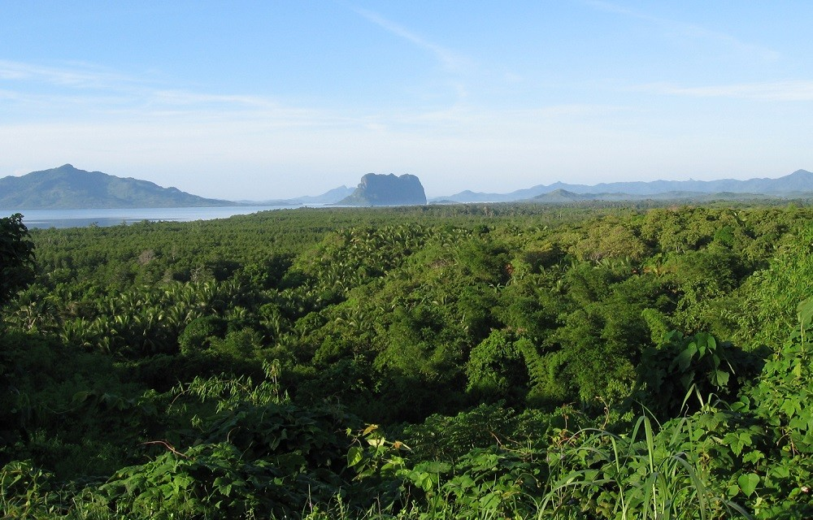
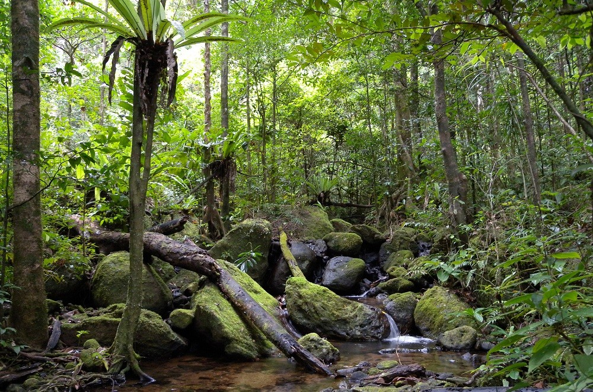
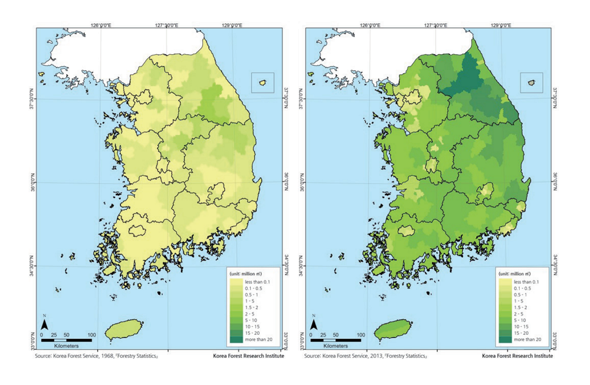
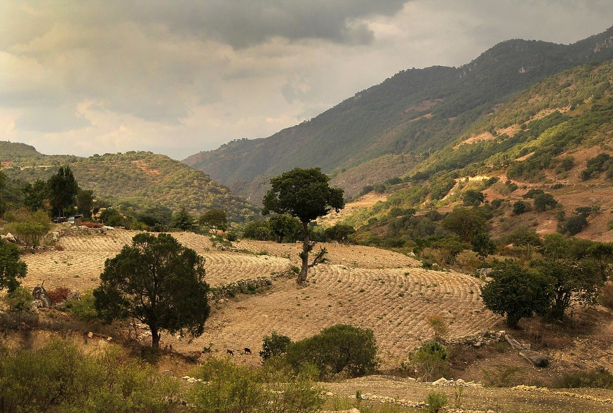
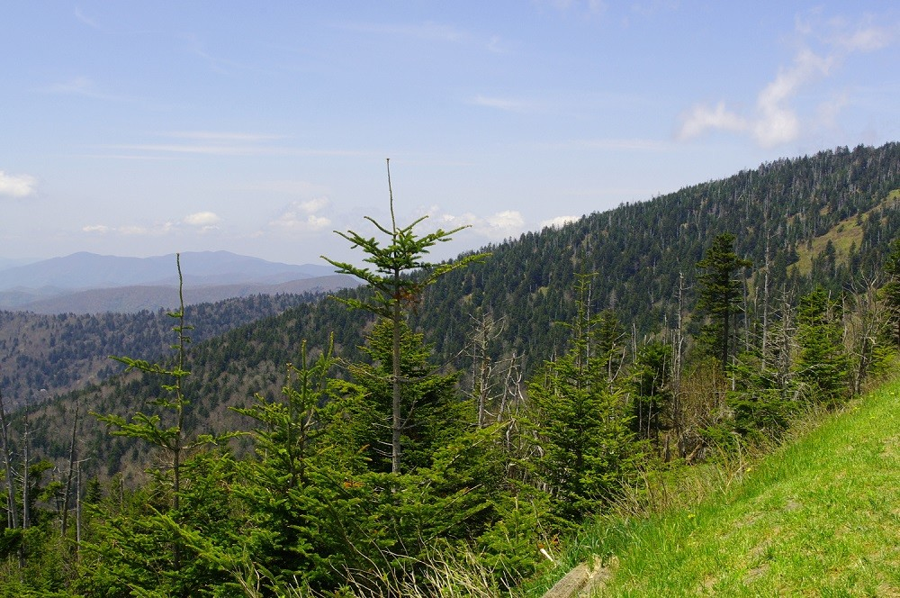
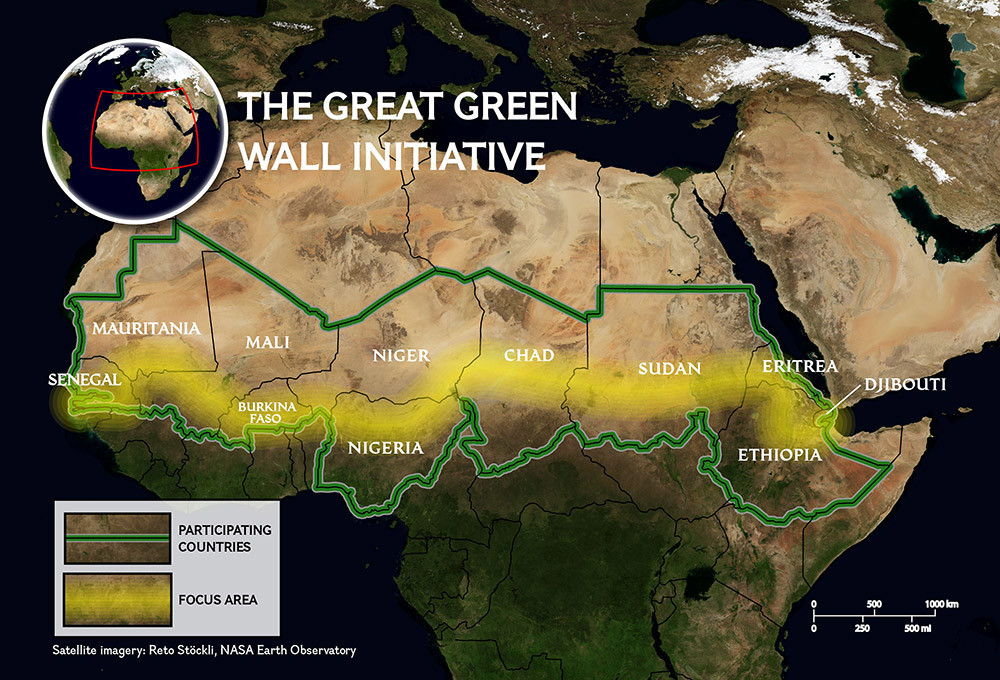

Un árbol es una planta, de tallo leñoso, que se ramifica a cierta altura del suelo. El término hace referencia habitualmente a aquellas plantas cuya altura supera un determinado límite en la madurez, diferente según las fuentes: dos metros, tres metros, cinco metros o los seis metros. Además, producen ramas secundarias nuevas cada año, que parten de un único fuste o tronco, con clara dominancia apical, dando lugar a una nueva copa separada del suelo. Algunos autores establecen un mínimo de 10 cm de diámetro en el tronco (la longitud de la circunferencia sería de unos 30 cm). Las plantas leñosas que no reúnen estas características por tener varios troncos o por ser de pequeño tamaño son consideradas arbustos.
Los árboles presentan una mayor longitud que otros tipos de plantas. Ciertas especies de vegetales (como las secuoyas) pueden superar los 100 m de altura, y llegar a vivir durante miles de años. Los árboles han existido desde hace 370 millones de años. Se estima que hay poco más de 3 billones de árboles maduros en el mundo.
Un estudio realizado por la Universidad de Yale y luego publicado en la revista Nature, estima que en la Tierra hay alrededor de 3 billones de árboles, y su cantidad se redujo un 46% desde que comenzó la civilización humana, dando en promedio 422 árboles por persona, pero, cada año se pierden 15.000 millones de ejemplares.
Por que son importantes
Los árboles son unas plantas increíbles. Cada uno de ellos es un ecosistema en sí mismo, un ecosistema que se ha tratar de cuidar, del mismo modo en el que ellos nos cuidan.
Los árboles y plantas son muy importantes para todos los nosotros, pues sin el oxígeno que expulsan sus hojas la vida en la Tierra sería muy distinta. La importancia de los árboles radica, pues, en que sin estas maravillosas plantas el planeta sería un desierto.
Los árboles son un importante componente del paisaje natural debido a que previenen la erosión y proporcionan un ecosistema protegido de las inclemencias del tiempo en su follaje y por debajo de él. También desempeñan un papel importante a la hora de producir oxígeno y reducir el dióxido de carbono en la atmósfera, así como moderar las temperaturas en el suelo. También, son elementos en el paisajismo y la agricultura, tanto por su atractivo aspecto como por su producción de frutos en huertos de frutales como el manzano.
La madera de los árboles es un material de construcción, así como una fuente de energía primaria en muchos países en vías de desarrollo. Los árboles desempeñan también un importante papel en muchas mitologías del mundo.
BENEFICIOS
Nos aportan el oxígeno
Los árboles, al igual que todas las plantas que tienen clorofila, realizan la fotosíntesis. Esto significa que absorben dióxido de carbono y expulsan oxígeno, para así convertir la materia inorgánica en materia orgánica, es decir, en alimento gracias al cual pueden crecer y desarrollarse correctamente.
Si tuviera las hojas secas y/o afectadas por plagas, este proceso se intentaría hacer por supuesto, pero la planta tendría muchas dificultades. Asimismo, no es importante sólo tratarlos contra las plagas, sino también hay que evitar que el polvo se acumule en la superficie de sus partes foliares, y que el agua permanezca demasiado tiempo en ellas. En el caso de que no lo hagamos, no podrían hacer la fotosíntesis, y por lo tanto tampoco expulsarían oxígeno.
¿Cuánto aire respiramos al día? Bastante. Inspiramos y espiramos entre 5 y 6 litros de aire por minuto, que en 24 horas son entre 7200 y 8600. Gracias a este proceso, absorbemos el oxígeno y expulsamos el dióxido de carbono. Justo lo contrario que durante la fotosíntesis. Se podría decir que las plantas y los seres humanos se ayudan mutuamente a vivir.
Sin embargo, se necesitan 22 árboles para suplir la demanda de una persona al día. La deforestación nos está perjudicando a corto y a largo plazo, poniendo en riesgo nuestra propia supervivencia, y si no hacemos nada, la Tierra se quedará sin sus pulmones.
Árboles contra el efecto invernadero
La acumulación de gases en la atmósfera está haciendo que el clima en el planeta cambie más rápido de lo que no lo ha hecho nunca. El ser humano ha jugado un papel protagonista en esta historia, puesto que desde la Revolución Industrial ha ido contaminando más y más, destruyendo todo a su paso.
Los árboles absorben casi 22 kg de dióxido de carbono cada año. Pero hay uno en particular que me gustaría mencionarte: la Pawlonia tomentosa. Esta increíble especie originaria de China se la conoce con el nombre de el »Arbol de la Vida». Sus hojas caducas y sus decorativas flores hacen de él un árbol de jardín excepcional, pues puede vivir en cualquier tipo de suelos. Tiene un ritmo de crecimiento muy rápido, y es de muy fácil cultivo.
El Árbol de la Vida resiste el fuego, pues sus raíces se regeneran rápidamente. Y si esto te parece poco, decirte que emite grandes cantidades de oxígeno, y absorbe hasta diez veces más de dióxido de carbono que otros árboles.
Su esperanza de vida es de entre 200 y 250 años. Así que si quieres tener una bomba de oxígeno en tu hogar, este es tu árbol. Es decorativo, es fácil de cuidar, y es resistente. ¿Qué más se puede pedir? ¿Que resista las heladas? En tal caso, tengo una buena noticia que darte: la Pawlonia tomentosa soporta hasta los -5ºC. Es estupendo, ¿no crees?
Los árboles nos alimentan con sus frutos
Hay muchas especies arbóreas cuyo fruto es comestible: manzanos, naranjos, nogales, madroños, avellanos… Todos ellos son ideales para tener en un jardín, plantados junto al huerto por ejemplo. No hay nada como cosechar tu propio alimento, y aquel que tiene un frutal o varios en casa, podrá degustar el auténtico sabor de la naturaleza.
Pero en función del clima habrá que escoger unos u otros, ya que no todos necesitan las mismas horas de frío para florecer, ni soportan las mismas temperaturas. Teniendo esto en cuenta, debes escoger los siguientes árboles dependiendo del clima que tengas:
• Frutales para climas con heladas intensas: avellano, arándono, cerezo, ciruelo, endrina, grosella, melocotonero, manzano, nectarina, nogal, peral.
• Frutales para climas templados: albaricoque, algarrobo, castaño, higuera, olivo.
• Frutales para climas con heladas muy suaves: caqui, feijoa, limonero, kumquat, mandarino, naranjo, níspero, pomelo.
• Frutales para clima tropical: aguacate, mango, durián, guayabo, papayo, pitanga, rambután.
Todos ellos tienen que estar en una zona donde les dé el sol directamente, con el espacio suficiente para que puedan desarrollarse sin problemas. Así, es importante que, antes de decantarnos por una especie en concreto, sepamos cuáles van a ser sus dimensiones una vez que llegue a la edad adulta. Así, evitaremos que en un futuro tengamos que podarlo más de la cuenta o cambiarlo de sitio.
Previenen la erosión del suelo
Así es. Los árboles previenen la erosión manteniendo la humedad del suelo. Lo hacen gracias a sus raíces, que profundizan en el mismo. De esta manera, la planta no sólo se mantiene bien anclada, disminuyendo el riesgo de que el viento pueda moverla, sino que además, evita que el terreno acabe sin vida.
En principio cualquier árbol que no necesite suelos fértiles (o, lo que es lo mismo, especies mediterráneas o aquellas que sean muy resistentes al viento) y que mida alrededor de 2m de altura te servirá. Generalmente, sólo tienes que evitar poner frutales, pues ellos necesitan un terreno muy fértil para que sus frutos maduren correctamente.
Plántalos en aquellas zonas en donde la erosión sea una grave amenaza, como las pendientes o las zonas abiertas que no tengan nada que pueda impedir el viento, y también alrededor de todo el perímetro de la zona. Pero, si deseas evitar que tu suelo acabe erosionado, te recomiendo que plantes arbustos y/o flores alrededor de los árboles. Así conseguirás tener un jardín espectacular.
La erosión es un problema muy serio, causado por el desgaste del suelo del viento y de las lluvias. Cuando no hay cubierta vegetal, los rayos del sol impactan directamente sobre él, el viento se lleva consigo los pocos nutrientes que le quedan, y cuando llueve de forma torrencial, podemos tener una zona totalmente inundada. Así, es muy recomendable que, si vives en una zona que pueda verse afectada por este problema, no dudes en plantar árboles.
Embellecen el paisaje
Hay una buena cantidad de especies increíblemente decorativas. Ya sea por los colores que adquieren sus hojas en primavera y/u otoño, o por las flores que brotan de entre sus ramas, o por el porte elegante que tienen muchas de ellas, lo cierto es que nada sería lo mismo sin no hubiera árboles. Nos gustan mucho, y eso es algo que se nota.
Otros importantes usos de los árboles
Los árboles mantienen una estrecha relación con la humanidad. Además de los usos que hemos visto hasta ahora, hay otros que me gustaría mencionarte, y son:
Disminuyen la contaminación acústica
Si has ido alguna vez a un parque situado en medio de la ciudad, seguramente te hayas dado cuenta del poco ruido urbano que se oye, ¿verdad? Por este motivo, los jardines situados cerca de carreteras o de aeropuertos plantan árboles.
Nos protegen del sol y nos refrescan
Hay muchos árboles que nos dan una buena sombra en verano, en la cual podemos hacer un picnic con la familia o disfrutar viendo el paisaje. Y todo gracias al vapor de agua que liberan a través de sus hojas.
De ellos extraemos la madera
Este material lo necesitamos para hacer mesas, sillas y todo tipo de mobiliario y/o herramientas. Pero la tala de árboles se tiene que hacer de manera responsable, y siempre plantando un ejemplar en el lugar del que hemos talado.
AMENAZAS
La deforestación
En Bolivia, la tasa de deforestación es de 350.000 ha al año, pero en términos per cápita 320 m2/persona/año, resulta en una tasa 20 veces más alta que el promedio mundial (~16 m2/persona/año) y una de las más altas del mundo, superando los niveles de otros grandes países deforestadores. La deforestación en bolivia Subió un 167% según la NASA. El país se encuentra entre los 10 que más deforestan en el mundo. En 2010 la pérdida de la masa forestal fue 20 veces más sobre la media planetaria según la Fundación Friedrich Ebert Stiftung de Alemania.
Datos de científicos de la La Administración Nacional de la Aeronáutica y del Espacio, más conocida como NASA de Estados Unidos, revelaron que los sectores con pérdida de área boscosa se incrementaron en forma pronunciada en Bolivia, Madagascar y Ecuador durante el tercer trimestre de 2013 y que esta situación se ha ido pronunciando mucho más en los últimos años.
EN 2010 BOLIVIA DEFORESTÓ 20 VECES MÁS QUE MEDIA MUNDIAL SEGÚN FUNDACIÓN ALEMANA, FRIEDRICH EBERT STIFTUNG
En el caso de Bolivia la deforestación en sólo tres meses llegó a 167 por ciento más que la registrada en el mismo periodo del año anterior, según publicó la agencia de noticias Erbol, que replicó un artículo aparecido en el blog, Vivens.
El indicador trimestral de cambios de cobertura (Quicc, por sus siglas en inglés), producto basado en el satélite Modis que forma la base del Alerta Global de Perturbaciones Forestales (GloF-DAS) de Mogabay.com, captó fuertes señales de desforestación en los tres países tropicales entre el 1 de julio y el 30 de setiembre de 2013: Bolivia (167 por ciento), Madagascar (126 por ciento) y Ecuador (38 por ciento), revela el informe.
Incendios
El año pasado (2019) Bolivia sufrió un incendio forestal de grandes proporciones, los focos de calor, siendo el epicentro en el Bosque Chiquitano, afectando a poblaciones como Roboré, Puerto Busch, y San Ignacio de Velasco, entre otros municipios
Los incendios forestales en Bolivia de 2020 fueron una serie de desastres que ocurrieron en los bosques de Bolivia, afectando inicialmente al Parque nacional Otuquis, los primeros focos fueron detectados el viernes 13 de marzo, según el Servicio Nacional de Áreas Protegidas el fuego ingresó al país a través de la frontera con Brasil.
Entre enero y mayo de 2020 se registraron 80% más focos de calor que durante el mismo periodo en 2019,hasta julio de 2020 los incendios en áreas protegidas y en el bosque chiquitano.
Al 31 de julio, se perdieron 40 mil hectáreas en el parque Otuquis.
El Observatorio del Bosque Chiquitano registro una cantidad de 187 focos de calor en el Departamento de Santa Cruz, afectando a varias areas protegidas como la Reserva Municipal Copaibo, el Parque Nacional Noel Kempff Mercado y el Área Natural de Manejo de Integrado (ANMI) San Matías. El 15 de septiembre, la presidenta de Bolivia, Jeanine Añez, después de un sobrevuelo a las zonas afectadas declaró el estado de emergencia nacional. “La atención del incendio como emergencia nacional nos va a permitir actuar sin trabas burocráticas y movilizando todos los recursos para que el fuego no avance, para frenar el fuego y así que nosotros tengamos la oportunidad y la opción de cuidar nuestra flora y fauna”, dijo la mandataria interina durante un acto publico en la ciudad oriental de Santa Cruz de la Sierra.
Se registraron 27,152 fuentes de calor entre el 28 de septiembre y el 4 de octubre, 10.562 de ellos estan en areas sin coberura y 16.590 en áreas con bosques y matorrales. Esto significa que hubo 3.879 focos en promedio diario, un 22% más que el año anterior.
CONSECUENCIAS
Destrucción del habitad
La destrucción del hábitat es el proceso por el cual un hábitat natural es transformado en un hábitat incapaz de mantener a las especies originarias del mismo. Las plantas y animales que lo utilizaban son destruidas o forzadas a emigrar, como consecuencia hay una reducción en la biodiversidad.
La agricultura es la causa principal de la destrucción de hábitats. Otras causas importantes son la minería, la tala de árboles, la sobrepesca y la proliferación urbana. La destrucción de hábitats es actualmente la causa más importante de la extinción de especies en el mundo. Es un proceso con poderosos efectos en la evolución y conservación biológica. Las causas adicionales incluyen la fragmentación de hábitats, procesos geológicos, cambios climáticos, especies invasoras, alteraciones de los nutrientes y las actividades humanas.
Los términos pérdida de hábitat y reducción de hábitat se usan en un sentido más amplio incluyendo la pérdida de hábitat por otros factores tales como contaminación del agua y contaminación acústica.
Fragmentación
La fragmentación de hábitat es un proceso de cambios ambientales importante para la evolución y la biología de la conservación.
Usualmente es definida como aquel proceso en el cual una gran extensión de hábitat es transformada en un número de parches más pequeños que se encuentran aislados entre sí por una matriz con propiedades diferentes a la del hábitat original.
El paisaje se fragmenta de forma progresiva, aumentando el contacto entre los parches y la matriz. Dado que los límites entre ambos no son tajantes, en las regiones de contacto se establece una transición denominada borde cuya extensión estará determinada principalmente por las propiedades de la matriz. En consecuencia, la proporción de hábitat que permanece relativamente intacta es una función compleja entre la forma y el tamaño de los parches, y la naturaleza de la matriz. No obstante, la fragmentación es un proceso que trasciende la interacción parche-matriz, teniendo implicaciones a nivel ambiental. De hecho, para que verdaderamente ocurra es necesario que exista discontinuidad en el paisaje, un atributo que obliga a ampliar a escala regional el estudio del fenómeno. La continuidad o conectividad de un hábitat está influida tanto por la localización física de los fragmentos, como por las características del ambiente circundante .
Si bien la fragmentación no es un proceso puramente antropogénico ya que puede resultar de sucesos naturales (como incendios o procesos geológicos), la causa más importante y extendida de la fragmentación es la expansión e intensificación del uso de la tierra por parte del ser humano. Esto, sumado a que se han constatado severas amenazas a la biodiversidad en virtualmente todos los grupos taxonómicos, ha colocado a la modificación y la fragmentación del paisaje como uno de los temas más graves y urgentes dentro de la ecología de la conservación.
Cambio de Uso de Suelo
La SEMARNAT describe al cambio de uso del suelo como la transformación de la cubierta vegetal original para convertirla a otros usos o degradar la calidad de la vegetación modificando la densidad y la composición de las especies presentes. Algunos factores que causan el cambio de uso de suelo y vegetación son la agricultura, ganadería y ampliación de infraestructuras. Entre las consecuencias más importantes del cambio de uso de suelo se encuentra la pérdida de la biodiversidad y los servicios ambientales.
Considerando que el territorio de Coahuila conserva más del 90 por ciento de su vegetación primaria, la cual es necesario preservar, es necesario conocer cual es el impacto de los cambios de uso de suelo en los principales tipos de vegetación presentes en el estado, para no interferir con algunas actividades productivas que han sido llevadas a cabo tradicionalmente a lo largo de los años.
Cambio Climatico
Desde que los científicos se dieron cuenta de que la temperatura promedio de la superficie del planeta podría alterarse por el
cambio en la concentración atmosférica de los GEI, comenzaron a hacer cálculos. Les interesaba saber, básicamente, qué temperaturas podrían alcanzarse en la Tierra con ciertas concentraciones de bióxido de carbono en la atmósfera. Las ecuaciones matemáticas que ocupaban eran relativamente sencillas al principio –esto fue hace casi 110 años-, tanto por el poco conocimiento que tenían de cómo funcionaba el clima, como por la dificultad de hacer muchas operaciones en una época en la que no existían las computadoras. Conforme pasó el tiempo, las ecuaciones fueron complicándose más e incluyeron nuevas variables que también se consideraron importantes, y que permitieron “simular” de mejor manera y en super computadoras, el comportamiento del sistema climático global. Sus resultados han ayudado a entender qué consecuencias podrían derivarse del aumento de los gases de efecto invernadero en nuestra atmósfera, y con ello desarrollar distintos escenarios, entre los que destacan los realizados por el Panel Intergubernamental sobre el Cambio Climático (IPCC).
En 2007 el IPCC presentó su Cuarto Informe de Evaluación, cuyas conclusiones son muy preocupantes. Se plantea que de seguir la tendencia actual en la emisión de los gases de efecto invernadero, en el año 2100 la concentración global de CO2 podría ser de entre 540 y 970 partes por millón. Para poner este dato en perspectiva, recuerda que la concentración actual es de 385 y en la época preindustrial era de tan sólo 280 partes por millón.
Este incremento en la concentración de los gases de efecto invernadero, como ahora sabemos, no irá sólo, afectará también la temperatura. El IPCC prevé que para la última década del siglo XXI, la temperatura promedio mundial podría aumentar entre 1.8 y 4°C.
Es posible que este incremento de temperatura parezca pequeño o poco significativo, ya que seguramente habrás vivido días consecutivos con cambios abruptos de temperatura -como los que ocurren, por ejemplo, cuando entra un “frente frío” o una “ola de calor”-, pero lo que debes tener en cuenta es que las proyecciones consideran cambios “promedio”, es decir, cambios en la temperatura general de los años, por así decirlo, y no de días aisladosPero si esto aún no te convence, debemos decirte que 5°C por debajo de la temperatura promedio actual fueron suficientes para mantener a una gran parte de Europa, Asia y Norteamérica bajo una inmensa masa de hielo hace más de 11 mil 500 años, durante la última de las glaciaciones.
La concentración de gases de efecto invernadero en la atmósfera, así como las temperaturas del aire y del mar están conectadas de manera muy íntima con otros elementos del ambiente, por lo que resultaría ingenuo imaginar que las consecuencias del cambio climático en el futuro se limitarán al cambio de la temperatura promedio. Los científicos ahora saben con relativa confianza que se afectarán los regímenes de precipitación (es decir, la manera en cómo y cuánto llueve en un sitio particular), los hielos presentes en los polos y en las cimas de volcanes y cordilleras, el nivel del mar y las especies y sus ecosistemas, y finalmente, a nosotros, los seres humanos. De hecho, mucha de la preocupación alrededor del cambio climático está en cómo se verán afectados los elementos de nuestra vida diaria tales como la alimentación (debido a la caída de la producción agrícola y pesquera), la salud (por el aumento en los casos de enfermedades transmitidas por vectores6, como la malaria, Mapa 4) y la seguridad (con el aumento, por ejemplo, de las víctimas mortales por huracanes y tormentas)
Degradación y perdida de fertilidad en los suelos
La degradación continua pone en peligro la seguridad alimentaria, destruye la biodiversidad y agrava el calentamiento, alertan los expertos
La actividad humana está ocasionando un deterioro a escala global de las tierras del planeta. Es la alerta que lanzan los expertos que han elaborado la primera evaluación sobre el estado de los suelos en el mundo: campos, pastizales, humedales o bosques. Un solo ejemplo: el 54% de los humedales se han perdido desde el inicio del siglo XX.
La degradación de la tierra causada por las actividades humanas está socavando el bienestar de dos quintas partes de la humanidad, erosiona la biodiversidad, agrava el calentamiento y actúa como motor de las migraciones humanas. Así lo recoge el informe de la Plataforma Intergubernamental sobre Diversidad Biológica y Servicios de Ecosistemas (IPBES). Formada por más de 100 expertos, este equipo ha recopilado durante tres años toda la información al respecto, a instancias de la ONU.
La degradación de las tierras se debe en gran medida a la rápida expansión agrícola y al manejo insostenible de las tierras de cultivo y el pastoreo. Sus efectos son la pérdida de biodiversidad y el daño en los servicios que prestan los ecosistemas (alimentos, agua, energía…) de los que dependen las personas. Las tierras de cultivo y pastoreo ahora cubren más de un tercio de la superficie terrestre.
La degradación de los suelos –dicen los autores del informe– se manifiesta de muchas maneras: abandono de esas tierras, disminución de las poblaciones de especies silvestres, pérdida de tierras fértiles, degradación de pastizales y de agua dulce, o deforestación.
Se estima que menos del 25% de la superficie terrestre de la Tierra ha escapado a estos impactos, pero para el 2050 esta proporción caerá al 10%. Se han dejado de explotar básicamente suelos no aptos: desiertos, montañas, tundra o territorios polares.
El informe alerta sobre el aumento del uso de fertilizantes y de productos químicos y un cambio hacia sistemas de ganadería industrializada, por lo que se espera que el uso de pesticidas y fertilizantes se duplique para 2050.
Perdida de biodiversidad
Uno de los principales objetivos conjuntos que deberíamos tener todos los habitantes del mundo es la concienciación de lo importante que es cuidar el entorno que nos rodea.
Cada vez es más común escuchar hablar del cambio climático y de la pérdida de biodiversidad, pero todavía queda mucho camino por recorrer.
La desconsideración de los individuos por las consecuencias de sus actos a largo plazo en relación con el sobreuso de los recursos biológicos, que tiene como consecuencia de la deforestación, es una de las principales causas del cambio climático y deterioro de nuestro planeta.
PROYECTOS
¡UN PROYECTO PARA PLANTAR 1 BILLÓN DE ARBOLES UTILIZANDO DRONES!
Cada año nuestro planeta pierde 13 mil millones de árboles y se recuperan menos de la mitad. El Proyecto Flash Forest comenzó con un objetivo muy particular:"curar los pulmones de nuestro planeta". Ninguna otra cosa importa hasta no estar concluida dicha tarea.
Más información
EOCA financia proyectos de siembra de árboles y regeneración forestal
European Outdoor Conservation Association (EOCA) tiene abierta la convocatoria para entregar subvenciones a organizaciones que trabajen por la conservación en todo el mundo.
EOCA apoya el trabajo por la conservación a través de la canalización de recursos y promoviendo el cuidado y el respeto por los lugares silvestres y los ecosistemas.
Para saber más
Haz click aquí
FONABOSQUE Para una Bolivia verde
El Fondo Nacional de Desarrollo Forestal – FONABOSQUE, es una institución descentralizada del Ministerio de Medio Ambiente y Agua (MMAYA) que financia programas y proyectos destinados al manejo sustentable de bosques con enfoque de gestión integral de cuencas, conservación de bosques y suelos forestales, recuperación de suelos degradados en áreas forestales y manejo integral del fuego.
Visitanos
Proyectos de reforestación más grandes de la historia
Cada vez hay más árboles en el mundo. Como vimos en este artículo, parte del proceso obedece a causas naturales, como el aumento global del CO2 derivado de la contaminación industrial. Pero otra parte sustancial de la creciente prominencia de los bosques del mundo es directamente atribuible al ser humano. A sus proyectos de reforestación. El último gran plan, de espectaculares dimensiones, ha sido el desvelado por el actual gobierno indio: una inversión de más de 6.000 millones de euros para que los árboles pasen de cubrir el actual 21% de la superficie total del país al futuro 33%. Una tarea de dimensiones titánicas.
En un país como la India, cuyos índices de contaminación (en rápida industrialización y con una población de más de mil millones de personas) son tan altos, es una buena noticia. El crecimiento demográfico y económico del país, al igual que en Europa en su momento, se ha realizado a costa del medio ambiente. Dada su escala, el plan es espectacular, pero no es el único de semejantes características en poblar la geografía mundial. Hay otros de igual calado, de semejantes intenciones y de éxito probado. Repasemos cuáles han sido algunos de los proyectos de reforestación más grandes de la historia hasta el momento.
1. La otra muralla china
China tenía un problema: el desierto del Gobi, situado en el norte del país y uno de los más áridos de Asia, estaba ganando terreno a espuertas.
Con anterioridad a la creación de la Gran Muralla Verde, en 1978, el Gobi estaba ganando alrededor de 3.000 kilómetros de superficie anual. Para evitarlo, las autoridades decidieron emprender el mayor proyecto de reforestación del mundo: un gigantesco muro de árboles que ponga cerco a los límites del desierto. Gracias al proyecto, y a otros desarrollados en diversos puntos del país, China había logrado replantar unos 500.000 kilómetros cuadrados hasta 2009.
La Gran Muralla Verde no ha estado exenta de críticas: desde su relativa débil resistencia a las tormentas de arena hasta sus preocupantes efectos en la biodiversidad de la región.
2. La recuperación forestal de Filipinas
1.500 millones de árboles en 1.500.000 hectáreas. 
Ese era el objetivo último del programa nacional de reforestación de Filipinas, introducido por el gobierno asiático en 2011. Durante la década anterior, el archipiélago había perdido masa forestal a un ritmo de 47.000 hectáreas por año.
Desde la implantación del programa, uno de los más extensos y notables del mundo, Filipinas no sólo ha recuperado sus árboles perdidos, sino que los ha multiplicado: 240.000 nuevas héctareas de bosques se han regenerado de la mano del plan (que no ha estado exento de críticas y problemas por su selección de especies, exóticas, de rápido crecimiento pero no endógenas).
3. Madagascar: de la nada al todo
Los bosques de Madagascar, la isla nación africana ubicada en pleno Océano Índico, son un vivero de especies naturales. O mejor dicho: habían sido.

Los usos extensivos de la tierra, la quema de madera, la tala sistemática y la contaminación han reducido la masa arbórea original de Madagascar al 10%. Desde 2007, sin embargo, la acción de organizaciones no gubernamentales como Eden Projects ha permitido recuperar parte del terreno perdido: se han plantado alrededor de 80 millones de árboles a lo largo de la isla, recuperando parajes, ecosistemas y generando puestos de trabajo locales a través del plan.
4. Corea del Sur y sus árboles de posguerra
La ocupación japonesa durante la Segunda Guerra Mundial, la posterior guerra civil y el uso intensivo de la tierra, fundamentalmente para satisfacer las necesidades de una economía aún agrícola, habían dejado a Corea del Sur casi sin bosques.

Tras los conflictos, el desarrollo económico y la estabilidad gubernamental, la reforestación recuperó con cierta velocidad la masas forestal del país: a día de hoy alrededor de dos tercios de Corea del Sur son bosques, y desde los cincuenta se han plantado 11.000 millones de árboles. Un esfuerzo de medio siglo que se cuenta entre los más notables de la historia.
5. El resurgir de La Mixteca, en México
La historia arbórea de La Mixteca, en México, se enmarca dentro de las diversas actuaciones del Centro de Desarrollo Integral Campesino, liderado por Jesús León Santos. 
La región había sufrido una alta degradación del suelo dados los usos económicos (pastoreo), la pobre utilización del terreno y las consecuencias inmediatas de la revolución verde. Antaño cubierta de árboles, aún hoy parece un páramo desértico. Pero no en todas partes.
Entre otras actuaciones orientadas a la sostenibilidad de su agricultura, el proyecto ha plantado más de cuatro millón de árboles desde los ochenta (pino y aliso), reverdeciendo el área
6. 60 millones de árboles para los Apalaches
No sólo la agricultura ha terminado con amplias masas de bosques. También la minería. Los montes Apalaches, en la costa este estadounidense, fueron durante siglos fuente de riqueza minera, contribuyendo a espolear el crecimiento industrial de Estados Unidos gracias a sus amplias reservas de carbón.

El precio a pagar fue la degradación de tan especial paraje natural, acabando con miles de bosques. Desde 2005, la Appalachian Region Reforestation Initiative, formada por distintas organizaciones conservacionistas, ha implantado programas de reforestación. El resultado, más de 60 millones de nuevos árboles en apenas 35.000 hectáreas.
7. El muro verde subsahariano
Hablamos de ello en su momento aquí. Inspirados por la experiencia china en el Gobi, 
un largo número de países subsharianos están decididos a plantar una gigantesca barrera arbórea que frene la grave desertificación del Sahel y que permita a miles de comunidades locales seguir viviendo de su suelo.
El muro tendría unos 7.000 kilómetros de largo y unos 20 de ancho, y el proyecto busca promover usos del suelo sostenibles que prevengan al Sáhara de seguir ganando terreno hacia el sur.

 Un árbol es una planta, de tallo leñoso, que se ramifica a cierta altura del suelo. El término hace referencia habitualmente a aquellas plantas cuya altura supera un determinado límite en la madurez, diferente según las fuentes: dos metros, tres metros, cinco metros o los seis metros. Además, producen ramas secundarias nuevas cada año, que parten de un único fuste o tronco, con clara dominancia apical, dando lugar a una nueva copa separada del suelo. Algunos autores establecen un mínimo de 10 cm de diámetro en el tronco (la longitud de la circunferencia sería de unos 30 cm). Las plantas leñosas que no reúnen estas características por tener varios troncos o por ser de pequeño tamaño son consideradas arbustos.
Los árboles presentan una mayor longitud que otros tipos de plantas. Ciertas especies de vegetales (como las secuoyas) pueden superar los 100 m de altura, y llegar a vivir durante miles de años. Los árboles han existido desde hace 370 millones de años. Se estima que hay poco más de 3 billones de árboles maduros en el mundo.
Un estudio realizado por la Universidad de Yale y luego publicado en la revista Nature, estima que en la Tierra hay alrededor de 3 billones de árboles, y su cantidad se redujo un 46% desde que comenzó la civilización humana, dando en promedio 422 árboles por persona, pero, cada año se pierden 15.000 millones de ejemplares.
Un árbol es una planta, de tallo leñoso, que se ramifica a cierta altura del suelo. El término hace referencia habitualmente a aquellas plantas cuya altura supera un determinado límite en la madurez, diferente según las fuentes: dos metros, tres metros, cinco metros o los seis metros. Además, producen ramas secundarias nuevas cada año, que parten de un único fuste o tronco, con clara dominancia apical, dando lugar a una nueva copa separada del suelo. Algunos autores establecen un mínimo de 10 cm de diámetro en el tronco (la longitud de la circunferencia sería de unos 30 cm). Las plantas leñosas que no reúnen estas características por tener varios troncos o por ser de pequeño tamaño son consideradas arbustos.
Los árboles presentan una mayor longitud que otros tipos de plantas. Ciertas especies de vegetales (como las secuoyas) pueden superar los 100 m de altura, y llegar a vivir durante miles de años. Los árboles han existido desde hace 370 millones de años. Se estima que hay poco más de 3 billones de árboles maduros en el mundo.
Un estudio realizado por la Universidad de Yale y luego publicado en la revista Nature, estima que en la Tierra hay alrededor de 3 billones de árboles, y su cantidad se redujo un 46% desde que comenzó la civilización humana, dando en promedio 422 árboles por persona, pero, cada año se pierden 15.000 millones de ejemplares.
 Los árboles absorben casi 22 kg de dióxido de carbono cada año. Pero hay uno en particular que me gustaría mencionarte: la Pawlonia tomentosa. Esta increíble especie originaria de China se la conoce con el nombre de el »Arbol de la Vida». Sus hojas caducas y sus decorativas flores hacen de él un árbol de jardín excepcional, pues puede vivir en cualquier tipo de suelos. Tiene un ritmo de crecimiento muy rápido, y es de muy fácil cultivo.
El Árbol de la Vida resiste el fuego, pues sus raíces se regeneran rápidamente. Y si esto te parece poco, decirte que emite grandes cantidades de oxígeno, y absorbe hasta diez veces más de dióxido de carbono que otros árboles.
Su esperanza de vida es de entre 200 y 250 años. Así que si quieres tener una bomba de oxígeno en tu hogar, este es tu árbol. Es decorativo, es fácil de cuidar, y es resistente. ¿Qué más se puede pedir? ¿Que resista las heladas? En tal caso, tengo una buena noticia que darte: la Pawlonia tomentosa soporta hasta los -5ºC. Es estupendo, ¿no crees?
Los árboles absorben casi 22 kg de dióxido de carbono cada año. Pero hay uno en particular que me gustaría mencionarte: la Pawlonia tomentosa. Esta increíble especie originaria de China se la conoce con el nombre de el »Arbol de la Vida». Sus hojas caducas y sus decorativas flores hacen de él un árbol de jardín excepcional, pues puede vivir en cualquier tipo de suelos. Tiene un ritmo de crecimiento muy rápido, y es de muy fácil cultivo.
El Árbol de la Vida resiste el fuego, pues sus raíces se regeneran rápidamente. Y si esto te parece poco, decirte que emite grandes cantidades de oxígeno, y absorbe hasta diez veces más de dióxido de carbono que otros árboles.
Su esperanza de vida es de entre 200 y 250 años. Así que si quieres tener una bomba de oxígeno en tu hogar, este es tu árbol. Es decorativo, es fácil de cuidar, y es resistente. ¿Qué más se puede pedir? ¿Que resista las heladas? En tal caso, tengo una buena noticia que darte: la Pawlonia tomentosa soporta hasta los -5ºC. Es estupendo, ¿no crees?
:max_bytes(150000):strip_icc():format(webp)/453909181-597bbf043df78cbb7a25ef0b.jpg) • Frutales para climas templados: albaricoque, algarrobo, castaño, higuera, olivo.
• Frutales para climas con heladas muy suaves: caqui, feijoa, limonero, kumquat, mandarino, naranjo, níspero, pomelo.
• Frutales para clima tropical: aguacate, mango, durián, guayabo, papayo, pitanga, rambután.
Todos ellos tienen que estar en una zona donde les dé el sol directamente, con el espacio suficiente para que puedan desarrollarse sin problemas. Así, es importante que, antes de decantarnos por una especie en concreto, sepamos cuáles van a ser sus dimensiones una vez que llegue a la edad adulta. Así, evitaremos que en un futuro tengamos que podarlo más de la cuenta o cambiarlo de sitio.
• Frutales para climas templados: albaricoque, algarrobo, castaño, higuera, olivo.
• Frutales para climas con heladas muy suaves: caqui, feijoa, limonero, kumquat, mandarino, naranjo, níspero, pomelo.
• Frutales para clima tropical: aguacate, mango, durián, guayabo, papayo, pitanga, rambután.
Todos ellos tienen que estar en una zona donde les dé el sol directamente, con el espacio suficiente para que puedan desarrollarse sin problemas. Así, es importante que, antes de decantarnos por una especie en concreto, sepamos cuáles van a ser sus dimensiones una vez que llegue a la edad adulta. Así, evitaremos que en un futuro tengamos que podarlo más de la cuenta o cambiarlo de sitio.


 Datos de científicos de la La Administración Nacional de la Aeronáutica y del Espacio, más conocida como NASA de Estados Unidos, revelaron que los sectores con pérdida de área boscosa se incrementaron en forma pronunciada en Bolivia, Madagascar y Ecuador durante el tercer trimestre de 2013 y que esta situación se ha ido pronunciando mucho más en los últimos años.
Datos de científicos de la La Administración Nacional de la Aeronáutica y del Espacio, más conocida como NASA de Estados Unidos, revelaron que los sectores con pérdida de área boscosa se incrementaron en forma pronunciada en Bolivia, Madagascar y Ecuador durante el tercer trimestre de 2013 y que esta situación se ha ido pronunciando mucho más en los últimos años.
 EN 2010 BOLIVIA DEFORESTÓ 20 VECES MÁS QUE MEDIA MUNDIAL SEGÚN FUNDACIÓN ALEMANA, FRIEDRICH EBERT STIFTUNG
En el caso de Bolivia la deforestación en sólo tres meses llegó a 167 por ciento más que la registrada en el mismo periodo del año anterior, según publicó la agencia de noticias Erbol, que replicó un artículo aparecido en el blog, Vivens.
EN 2010 BOLIVIA DEFORESTÓ 20 VECES MÁS QUE MEDIA MUNDIAL SEGÚN FUNDACIÓN ALEMANA, FRIEDRICH EBERT STIFTUNG
En el caso de Bolivia la deforestación en sólo tres meses llegó a 167 por ciento más que la registrada en el mismo periodo del año anterior, según publicó la agencia de noticias Erbol, que replicó un artículo aparecido en el blog, Vivens.
 El indicador trimestral de cambios de cobertura (Quicc, por sus siglas en inglés), producto basado en el satélite Modis que forma la base del Alerta Global de Perturbaciones Forestales (GloF-DAS) de Mogabay.com, captó fuertes señales de desforestación en los tres países tropicales entre el 1 de julio y el 30 de setiembre de 2013: Bolivia (167 por ciento), Madagascar (126 por ciento) y Ecuador (38 por ciento), revela el informe.
El indicador trimestral de cambios de cobertura (Quicc, por sus siglas en inglés), producto basado en el satélite Modis que forma la base del Alerta Global de Perturbaciones Forestales (GloF-DAS) de Mogabay.com, captó fuertes señales de desforestación en los tres países tropicales entre el 1 de julio y el 30 de setiembre de 2013: Bolivia (167 por ciento), Madagascar (126 por ciento) y Ecuador (38 por ciento), revela el informe. Los incendios forestales en Bolivia de 2020 fueron una serie de desastres que ocurrieron en los bosques de Bolivia, afectando inicialmente al Parque nacional Otuquis, los primeros focos fueron detectados el viernes 13 de marzo, según el Servicio Nacional de Áreas Protegidas el fuego ingresó al país a través de la frontera con Brasil.
Entre enero y mayo de 2020 se registraron 80% más focos de calor que durante el mismo periodo en 2019,hasta julio de 2020 los incendios en áreas protegidas y en el bosque chiquitano.
Al 31 de julio, se perdieron 40 mil hectáreas en el parque Otuquis.
Los incendios forestales en Bolivia de 2020 fueron una serie de desastres que ocurrieron en los bosques de Bolivia, afectando inicialmente al Parque nacional Otuquis, los primeros focos fueron detectados el viernes 13 de marzo, según el Servicio Nacional de Áreas Protegidas el fuego ingresó al país a través de la frontera con Brasil.
Entre enero y mayo de 2020 se registraron 80% más focos de calor que durante el mismo periodo en 2019,hasta julio de 2020 los incendios en áreas protegidas y en el bosque chiquitano.
Al 31 de julio, se perdieron 40 mil hectáreas en el parque Otuquis.
 El Observatorio del Bosque Chiquitano registro una cantidad de 187 focos de calor en el Departamento de Santa Cruz, afectando a varias areas protegidas como la Reserva Municipal Copaibo, el Parque Nacional Noel Kempff Mercado y el Área Natural de Manejo de Integrado (ANMI) San Matías. El 15 de septiembre, la presidenta de Bolivia, Jeanine Añez, después de un sobrevuelo a las zonas afectadas declaró el estado de emergencia nacional. “La atención del incendio como emergencia nacional nos va a permitir actuar sin trabas burocráticas y movilizando todos los recursos para que el fuego no avance, para frenar el fuego y así que nosotros tengamos la oportunidad y la opción de cuidar nuestra flora y fauna”, dijo la mandataria interina durante un acto publico en la ciudad oriental de Santa Cruz de la Sierra.
Se registraron 27,152 fuentes de calor entre el 28 de septiembre y el 4 de octubre, 10.562 de ellos estan en areas sin coberura y 16.590 en áreas con bosques y matorrales. Esto significa que hubo 3.879 focos en promedio diario, un 22% más que el año anterior.
El Observatorio del Bosque Chiquitano registro una cantidad de 187 focos de calor en el Departamento de Santa Cruz, afectando a varias areas protegidas como la Reserva Municipal Copaibo, el Parque Nacional Noel Kempff Mercado y el Área Natural de Manejo de Integrado (ANMI) San Matías. El 15 de septiembre, la presidenta de Bolivia, Jeanine Añez, después de un sobrevuelo a las zonas afectadas declaró el estado de emergencia nacional. “La atención del incendio como emergencia nacional nos va a permitir actuar sin trabas burocráticas y movilizando todos los recursos para que el fuego no avance, para frenar el fuego y así que nosotros tengamos la oportunidad y la opción de cuidar nuestra flora y fauna”, dijo la mandataria interina durante un acto publico en la ciudad oriental de Santa Cruz de la Sierra.
Se registraron 27,152 fuentes de calor entre el 28 de septiembre y el 4 de octubre, 10.562 de ellos estan en areas sin coberura y 16.590 en áreas con bosques y matorrales. Esto significa que hubo 3.879 focos en promedio diario, un 22% más que el año anterior.
 La agricultura es la causa principal de la destrucción de hábitats. Otras causas importantes son la minería, la tala de árboles, la sobrepesca y la proliferación urbana. La destrucción de hábitats es actualmente la causa más importante de la extinción de especies en el mundo. Es un proceso con poderosos efectos en la evolución y conservación biológica. Las causas adicionales incluyen la fragmentación de hábitats, procesos geológicos, cambios climáticos, especies invasoras, alteraciones de los nutrientes y las actividades humanas.
Los términos pérdida de hábitat y reducción de hábitat se usan en un sentido más amplio incluyendo la pérdida de hábitat por otros factores tales como contaminación del agua y contaminación acústica.
La agricultura es la causa principal de la destrucción de hábitats. Otras causas importantes son la minería, la tala de árboles, la sobrepesca y la proliferación urbana. La destrucción de hábitats es actualmente la causa más importante de la extinción de especies en el mundo. Es un proceso con poderosos efectos en la evolución y conservación biológica. Las causas adicionales incluyen la fragmentación de hábitats, procesos geológicos, cambios climáticos, especies invasoras, alteraciones de los nutrientes y las actividades humanas.
Los términos pérdida de hábitat y reducción de hábitat se usan en un sentido más amplio incluyendo la pérdida de hábitat por otros factores tales como contaminación del agua y contaminación acústica.
 El paisaje se fragmenta de forma progresiva, aumentando el contacto entre los parches y la matriz. Dado que los límites entre ambos no son tajantes, en las regiones de contacto se establece una transición denominada borde cuya extensión estará determinada principalmente por las propiedades de la matriz. En consecuencia, la proporción de hábitat que permanece relativamente intacta es una función compleja entre la forma y el tamaño de los parches, y la naturaleza de la matriz. No obstante, la fragmentación es un proceso que trasciende la interacción parche-matriz, teniendo implicaciones a nivel ambiental. De hecho, para que verdaderamente ocurra es necesario que exista discontinuidad en el paisaje, un atributo que obliga a ampliar a escala regional el estudio del fenómeno. La continuidad o conectividad de un hábitat está influida tanto por la localización física de los fragmentos, como por las características del ambiente circundante .
El paisaje se fragmenta de forma progresiva, aumentando el contacto entre los parches y la matriz. Dado que los límites entre ambos no son tajantes, en las regiones de contacto se establece una transición denominada borde cuya extensión estará determinada principalmente por las propiedades de la matriz. En consecuencia, la proporción de hábitat que permanece relativamente intacta es una función compleja entre la forma y el tamaño de los parches, y la naturaleza de la matriz. No obstante, la fragmentación es un proceso que trasciende la interacción parche-matriz, teniendo implicaciones a nivel ambiental. De hecho, para que verdaderamente ocurra es necesario que exista discontinuidad en el paisaje, un atributo que obliga a ampliar a escala regional el estudio del fenómeno. La continuidad o conectividad de un hábitat está influida tanto por la localización física de los fragmentos, como por las características del ambiente circundante .
 Si bien la fragmentación no es un proceso puramente antropogénico ya que puede resultar de sucesos naturales (como incendios o procesos geológicos), la causa más importante y extendida de la fragmentación es la expansión e intensificación del uso de la tierra por parte del ser humano. Esto, sumado a que se han constatado severas amenazas a la biodiversidad en virtualmente todos los grupos taxonómicos, ha colocado a la modificación y la fragmentación del paisaje como uno de los temas más graves y urgentes dentro de la ecología de la conservación.
Si bien la fragmentación no es un proceso puramente antropogénico ya que puede resultar de sucesos naturales (como incendios o procesos geológicos), la causa más importante y extendida de la fragmentación es la expansión e intensificación del uso de la tierra por parte del ser humano. Esto, sumado a que se han constatado severas amenazas a la biodiversidad en virtualmente todos los grupos taxonómicos, ha colocado a la modificación y la fragmentación del paisaje como uno de los temas más graves y urgentes dentro de la ecología de la conservación.
 Considerando que el territorio de Coahuila conserva más del 90 por ciento de su vegetación primaria, la cual es necesario preservar, es necesario conocer cual es el impacto de los cambios de uso de suelo en los principales tipos de vegetación presentes en el estado, para no interferir con algunas actividades productivas que han sido llevadas a cabo tradicionalmente a lo largo de los años.
Considerando que el territorio de Coahuila conserva más del 90 por ciento de su vegetación primaria, la cual es necesario preservar, es necesario conocer cual es el impacto de los cambios de uso de suelo en los principales tipos de vegetación presentes en el estado, para no interferir con algunas actividades productivas que han sido llevadas a cabo tradicionalmente a lo largo de los años.
 En 2007 el IPCC presentó su Cuarto Informe de Evaluación, cuyas conclusiones son muy preocupantes. Se plantea que de seguir la tendencia actual en la emisión de los gases de efecto invernadero, en el año 2100 la concentración global de CO2 podría ser de entre 540 y 970 partes por millón. Para poner este dato en perspectiva, recuerda que la concentración actual es de 385 y en la época preindustrial era de tan sólo 280 partes por millón.
Este incremento en la concentración de los gases de efecto invernadero, como ahora sabemos, no irá sólo, afectará también la temperatura. El IPCC prevé que para la última década del siglo XXI, la temperatura promedio mundial podría aumentar entre 1.8 y 4°C.
Es posible que este incremento de temperatura parezca pequeño o poco significativo, ya que seguramente habrás vivido días consecutivos con cambios abruptos de temperatura -como los que ocurren, por ejemplo, cuando entra un “frente frío” o una “ola de calor”-, pero lo que debes tener en cuenta es que las proyecciones consideran cambios “promedio”, es decir, cambios en la temperatura general de los años, por así decirlo, y no de días aisladosPero si esto aún no te convence, debemos decirte que 5°C por debajo de la temperatura promedio actual fueron suficientes para mantener a una gran parte de Europa, Asia y Norteamérica bajo una inmensa masa de hielo hace más de 11 mil 500 años, durante la última de las glaciaciones.
En 2007 el IPCC presentó su Cuarto Informe de Evaluación, cuyas conclusiones son muy preocupantes. Se plantea que de seguir la tendencia actual en la emisión de los gases de efecto invernadero, en el año 2100 la concentración global de CO2 podría ser de entre 540 y 970 partes por millón. Para poner este dato en perspectiva, recuerda que la concentración actual es de 385 y en la época preindustrial era de tan sólo 280 partes por millón.
Este incremento en la concentración de los gases de efecto invernadero, como ahora sabemos, no irá sólo, afectará también la temperatura. El IPCC prevé que para la última década del siglo XXI, la temperatura promedio mundial podría aumentar entre 1.8 y 4°C.
Es posible que este incremento de temperatura parezca pequeño o poco significativo, ya que seguramente habrás vivido días consecutivos con cambios abruptos de temperatura -como los que ocurren, por ejemplo, cuando entra un “frente frío” o una “ola de calor”-, pero lo que debes tener en cuenta es que las proyecciones consideran cambios “promedio”, es decir, cambios en la temperatura general de los años, por así decirlo, y no de días aisladosPero si esto aún no te convence, debemos decirte que 5°C por debajo de la temperatura promedio actual fueron suficientes para mantener a una gran parte de Europa, Asia y Norteamérica bajo una inmensa masa de hielo hace más de 11 mil 500 años, durante la última de las glaciaciones.  La concentración de gases de efecto invernadero en la atmósfera, así como las temperaturas del aire y del mar están conectadas de manera muy íntima con otros elementos del ambiente, por lo que resultaría ingenuo imaginar que las consecuencias del cambio climático en el futuro se limitarán al cambio de la temperatura promedio. Los científicos ahora saben con relativa confianza que se afectarán los regímenes de precipitación (es decir, la manera en cómo y cuánto llueve en un sitio particular), los hielos presentes en los polos y en las cimas de volcanes y cordilleras, el nivel del mar y las especies y sus ecosistemas, y finalmente, a nosotros, los seres humanos. De hecho, mucha de la preocupación alrededor del cambio climático está en cómo se verán afectados los elementos de nuestra vida diaria tales como la alimentación (debido a la caída de la producción agrícola y pesquera), la salud (por el aumento en los casos de enfermedades transmitidas por vectores6, como la malaria, Mapa 4) y la seguridad (con el aumento, por ejemplo, de las víctimas mortales por huracanes y tormentas)
La concentración de gases de efecto invernadero en la atmósfera, así como las temperaturas del aire y del mar están conectadas de manera muy íntima con otros elementos del ambiente, por lo que resultaría ingenuo imaginar que las consecuencias del cambio climático en el futuro se limitarán al cambio de la temperatura promedio. Los científicos ahora saben con relativa confianza que se afectarán los regímenes de precipitación (es decir, la manera en cómo y cuánto llueve en un sitio particular), los hielos presentes en los polos y en las cimas de volcanes y cordilleras, el nivel del mar y las especies y sus ecosistemas, y finalmente, a nosotros, los seres humanos. De hecho, mucha de la preocupación alrededor del cambio climático está en cómo se verán afectados los elementos de nuestra vida diaria tales como la alimentación (debido a la caída de la producción agrícola y pesquera), la salud (por el aumento en los casos de enfermedades transmitidas por vectores6, como la malaria, Mapa 4) y la seguridad (con el aumento, por ejemplo, de las víctimas mortales por huracanes y tormentas)
 La degradación de la tierra causada por las actividades humanas está socavando el bienestar de dos quintas partes de la humanidad, erosiona la biodiversidad, agrava el calentamiento y actúa como motor de las migraciones humanas. Así lo recoge el informe de la Plataforma Intergubernamental sobre Diversidad Biológica y Servicios de Ecosistemas (IPBES). Formada por más de 100 expertos, este equipo ha recopilado durante tres años toda la información al respecto, a instancias de la ONU.
La degradación de las tierras se debe en gran medida a la rápida expansión agrícola y al manejo insostenible de las tierras de cultivo y el pastoreo. Sus efectos son la pérdida de biodiversidad y el daño en los servicios que prestan los ecosistemas (alimentos, agua, energía…) de los que dependen las personas. Las tierras de cultivo y pastoreo ahora cubren más de un tercio de la superficie terrestre.
La degradación de la tierra causada por las actividades humanas está socavando el bienestar de dos quintas partes de la humanidad, erosiona la biodiversidad, agrava el calentamiento y actúa como motor de las migraciones humanas. Así lo recoge el informe de la Plataforma Intergubernamental sobre Diversidad Biológica y Servicios de Ecosistemas (IPBES). Formada por más de 100 expertos, este equipo ha recopilado durante tres años toda la información al respecto, a instancias de la ONU.
La degradación de las tierras se debe en gran medida a la rápida expansión agrícola y al manejo insostenible de las tierras de cultivo y el pastoreo. Sus efectos son la pérdida de biodiversidad y el daño en los servicios que prestan los ecosistemas (alimentos, agua, energía…) de los que dependen las personas. Las tierras de cultivo y pastoreo ahora cubren más de un tercio de la superficie terrestre.
 La degradación de los suelos –dicen los autores del informe– se manifiesta de muchas maneras: abandono de esas tierras, disminución de las poblaciones de especies silvestres, pérdida de tierras fértiles, degradación de pastizales y de agua dulce, o deforestación.
Se estima que menos del 25% de la superficie terrestre de la Tierra ha escapado a estos impactos, pero para el 2050 esta proporción caerá al 10%. Se han dejado de explotar básicamente suelos no aptos: desiertos, montañas, tundra o territorios polares.
El informe alerta sobre el aumento del uso de fertilizantes y de productos químicos y un cambio hacia sistemas de ganadería industrializada, por lo que se espera que el uso de pesticidas y fertilizantes se duplique para 2050.
La degradación de los suelos –dicen los autores del informe– se manifiesta de muchas maneras: abandono de esas tierras, disminución de las poblaciones de especies silvestres, pérdida de tierras fértiles, degradación de pastizales y de agua dulce, o deforestación.
Se estima que menos del 25% de la superficie terrestre de la Tierra ha escapado a estos impactos, pero para el 2050 esta proporción caerá al 10%. Se han dejado de explotar básicamente suelos no aptos: desiertos, montañas, tundra o territorios polares.
El informe alerta sobre el aumento del uso de fertilizantes y de productos químicos y un cambio hacia sistemas de ganadería industrializada, por lo que se espera que el uso de pesticidas y fertilizantes se duplique para 2050.
 La desconsideración de los individuos por las consecuencias de sus actos a largo plazo en relación con el sobreuso de los recursos biológicos, que tiene como consecuencia de la deforestación, es una de las principales causas del cambio climático y deterioro de nuestro planeta.
La desconsideración de los individuos por las consecuencias de sus actos a largo plazo en relación con el sobreuso de los recursos biológicos, que tiene como consecuencia de la deforestación, es una de las principales causas del cambio climático y deterioro de nuestro planeta.